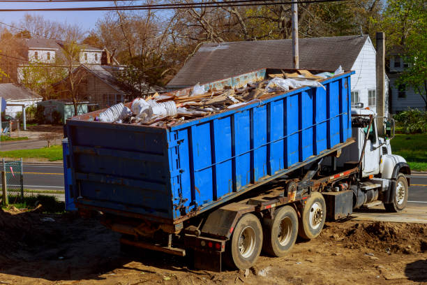

Top-notch junk removal in Germantown Maryland . We provide eco-friendly, quick, and affordable junk removal services for residential and commercial properties throughout the area.
Click Here To Call Us (877) 848-1711Looking for reliable junk removal in Germantown Maryland ? Trash It Junk Removal Services is here to help you clear out unwanted clutter efficiently and responsibly. Whether you're dealing with residential or commercial junk, our team of experts is equipped to handle all types of waste with care and precision.
At Trash It Junk Removal Services, we pride ourselves on offering fast, eco-friendly solutions that meet the needs of our diverse clientele. Our comprehensive junk removal services include everything from furniture and appliance disposal to yard waste and construction debris removal. We ensure that all items are sorted properly, with recyclable materials sent to appropriate facilities and non-recyclables disposed of in an environmentally responsible manner.
Why choose us? Our professional team in Germantown Maryland is dedicated to providing exceptional service with a focus on customer satisfaction. We offer flexible scheduling to fit your needs, and our transparent pricing ensures there are no hidden fees. With years of experience in the industry, we have built a reputation for reliability, efficiency, and friendly service.
Don't let clutter overwhelm your space. Contact Trash It Junk Removal Services today for top-notch junk removal services in Germantown Maryland . Let us handle the heavy lifting and disposal, so you can enjoy a cleaner, more organized environment.
Residential & commercial Junk removal
Quality services at affordable prices
Immediate 24/ 7 emergency services


We Haul Away Junk for You! Here Are the Trash Removal and Recycling Services We Offer Near You Across All Cities in Germantown Maryland
At Health Pro Insulation Services, we’re more than just an insulation company—we’re your go-to experts for junk removal and recycling services in Germantown Maryland . We understand the hassle of dealing with unwanted items, whether it’s post-renovation debris, old furniture, yard waste, or general household clutter. Our comprehensive junk removal services are designed to make your life easier, offering fast, reliable, and eco-friendly solutions that save you time and effort.
Residential Junk Removal: From old appliances to unwanted furniture and yard waste, our team handles it all. We make sure your space is clutter-free, allowing you to enjoy a clean and organized home. No job is too big or small for us.
Construction Debris Removal: Whether you're remodeling, renovating, or just clearing out, construction debris can be overwhelming. We offer efficient and safe debris removal, keeping your worksite tidy and hazard-free.
Recycling Services: We’re committed to protecting the environment. Our recycling services ensure that recyclable materials, including metal, paper, and electronics, are disposed of responsibly, reducing landfill waste.
E-Waste Disposal: Have outdated electronics lying around? Our e-waste disposal services ensure your old gadgets are recycled or disposed of properly, safeguarding the environment from hazardous materials.
Health Pro Insulation Services is proud to serve Germantown Maryland with professional, hassle-free junk removal and recycling solutions. Call us today and let us handle the heavy lifting—making your junk disappear while keeping Germantown Maryland cleaner and greener!
Residential & commercial Junk removal
Quality services at affordable prices
Immediate 24/ 7 emergency services
Hot tub removal is not just a matter of hooking it up and driving it away; it’s a process that requires skill and safety. Our hot tub removal services ensure that your old or unwanted hot tub is removed professionally and efficiently. We understand that hot tubs can be bulky and heavy, requiring a team with the right equipment and expertise to dismantle and haul them away safely. Our dedication to eco-friendly disposal ensures that we proper recycle materials from your hot tub, reducing landfill waste while clearing your space effectively. Choose our hot tub removal service for a worry-free experience.

If you’re involved in a construction project, the last thing you want to deal with is the overwhelming amount of debris that accumulates. Our construction debris removal services are designed to keep your job site safe and clean.
We understand the importance of maintaining an organized workspace, which is why we offer timely and efficient debris removal services that keep your project moving forward. From scrap materials to heavy equipment, our team is fully equipped to handle all types of construction debris. Trust us to provide a safe environment for your workers while ensuring compliance with local regulations. Contact us for reliable and professional construction debris removal!

Your home should be a sanctuary, free from clutter and chaos. Our junk removal for homes in Germantown Maryland is designed to help you declutter and simplify your life. We tackle everything from small piles of junk to large-scale cleanouts, ensuring that your space is left clean and welcoming. Our team is committed to providing a thorough, efficient service tailored to your specific needs. By choosing us, you’re investing in a more organized home environment that promotes relaxation and peace.

Disposing of electronic waste can be complex due to the regulations surrounding e-waste. Our electronic waste removal services in Germantown Maryland provide you with a safe and responsible way to dispose of outdated gadgets and electronics. From old computers to televisions and everything in between, we are equipped to handle your e-waste properly. We prioritize recycling and responsible disposal methods, ensuring that harmful materials are kept out of landfills and that your old electronics are treated with care. Choose us for an eco-friendly and compliant electronic waste solution.

Maintaining a tidy office environment is crucial for productivity and professionalism. Our office junk removal services in Germantown Maryland cater specifically to businesses looking to declutter their workspaces. Whether it’s old desks, outdated equipment, or surplus paperwork, we handle it all with care.
Our process is designed to minimize disruption to your workflow, with flexible scheduling options that respect your office hours. We believe in responsible disposal practices, ensuring that recyclable items are appropriately managed to reduce landfill waste. Choose us for your office junk removal needs and experience a clean, organized workspace that supports your business's success!
If you find yourself surrounded by trash and clutter, you need reliable trash removal services near you. Our expert team is dedicated to alleviating your stress with prompt and efficient removal of trash and debris. We handle both residential and commercial needs, ensuring that no job is too big or too small. Our commitment to excellent service includes transparency in pricing and a guarantee that all your trash will be disposed of responsibly. With our help, you can enjoy a clean and organized space in no time!

When it comes to junk removal and disposal, our services provide a comprehensive solution for all your clutter-related needs. We not only help you clear out unwanted items but also ensure that everything is disposed of responsibly and in accordance with local laws. Our environmentally-friendly disposal practices set us apart, ensuring that as much as possible is recycled or donated. With our trained and professional team, you can trust that your junk removal process will be handled with care and efficiency, giving you peace of mind and a clean environment.

When life’s clutter builds up into bulk junk, it’s time to call in the experts. Our bulk junk removal services cater to homeowners and businesses needing to clear out large volumes of unwanted items quickly and efficiently. Whether you’re dealing with old furniture, appliances, or even construction debris, our team is equipped and ready to tackle substantial removal jobs with ease. We pride ourselves on providing prompt service that prioritizes safety and responsible disposal practices. Choose us for bulk junk removal that simplifies your life and clears your space effectively.
Years Experience
Expert Technicians
Satisfied Clients
Compleate Projects
When it comes to junk removal in Germantown Maryland Trash It Junk Removal Services stands out as the top choice for efficiency and reliability. Our dedicated team is committed to providing top-notch service, ensuring that your space is cleared of unwanted clutter swiftly and responsibly. Whether you’re dealing with household junk, office debris, or construction waste, we handle it all with professionalism and care.
What sets us apart? First, our commitment to eco-friendly practices. We prioritize recycling and proper disposal, ensuring that as much waste as possible is diverted from landfills. Our team sorts through your items meticulously, sending recyclable materials to appropriate facilities and responsibly disposing of non-recyclables.
Second, we offer unmatched convenience. With flexible scheduling options, we work around your busy life to ensure minimal disruption. Our transparent pricing model means you’ll never face hidden fees—just straightforward, competitive rates that reflect the high quality of our service.
Third, our customer-focused approach guarantees satisfaction. From the moment you contact us, our friendly staff will assist you with every step, providing clear communication and reliable service. Our professional team arrives on time, works efficiently, and leaves your space spotless.
Choosing Trash It Junk Removal Services in Germantown Maryland means choosing a hassle-free, efficient solution for all your junk removal needs. Experience the difference with a service that values your time, respects your space, and cares for the environment. Contact us today to schedule your junk removal and see why we’re the best in Germantown Maryland .
When clutter takes over your space, finding a reliable junk removal service nearby becomes essential. Our team specializes in junk removal services in Germantown Maryland providing fast, friendly, and affordable solutions for all your junk removal needs. We understand that getting rid of unwanted items can be overwhelming, but with our efficient service, you can reclaim your space in no time. Our experienced professionals are dedicated to making the junk removal process as painless as possible, arriving promptly and prepared to handle any job, big or small. Choose us for a hassle-free experience, competitive pricing, and a commitment to eco-friendly disposal practices that prioritize recycling and responsible waste management.
Finding a junk removal service that fits your budget can be a challenge. At Junk removal, we offer affordable junk removal services without compromising on quality. Our team understands that tackling clutter shouldn’t break the bank. We provide free estimates and transparent pricing, which means no hidden fees or last-minute surprises. You’ll be amazed at how simple and cost-effective it is to have your unwanted items removed from your home or office in Germantown Maryland . Our clients appreciate our commitment to value; we find ways to recycle or donate items, further reducing what ends up in landfills and keeping our community clean and sustainable. Choose us for your junk removal; we've built our reputation on trust, value, and exceptional service.
Residential junk removal can be a daunting task, whether you’re moving, renovating, or just decluttering. Our residential junk removal services in Germantown Maryland are designed to alleviate stress and provide a reliable solution to your junk problems. We understand that your home is your sanctuary. Therefore, we treat it with the utmost respect, ensuring that your belongings are handled carefully and disposed of responsibly. Our dedicated team will come to your home, evaluate your needs, and provide you with a comprehensive, no-obligation estimate. With same-day service availability, you'll enjoy a clutter-free home in no time. Count on us for prompt, professional, and reliable service tailored just for you.
Maintaining a clean workspace is vital for productivity and the well-being of your employees. Our commercial junk removal services in Germantown Maryland cater to businesses of all sizes, from small offices to large corporate facilities. We offer flexible scheduling to minimize disruptions to your operations and can tailor our services to your specific requirements, whether it’s routine cleanouts, renovation debris removal, or office relocations. Our team understands the unique challenges posed by commercial junk, and we approach each job with professionalism and efficiency. Trust us to handle the heavy lifting while you focus on what you do best—running your business.
Junk hauling isn’t just about removing unwanted items; it’s about providing peace of mind and a clear, tidy space. Our junk hauling services are designed to take the burden off your shoulders. We have the equipment and expertise to handle all types of junk, from furniture and appliances to yard waste and construction debris. We are committed to minimizing waste in landfills by prioritizing recycling and donating items whenever possible. Our dedicated professionals provide thorough, reliable service and ensure that everything is done safely and efficiently. Choose us for comprehensive junk hauling services that you can depend on.
When life throws you a curveball, and you need junk removed quickly, our same-day junk removal service is here for you. we cater to urgent junk removal needs, providing fast response times and the ability to have your junk cleared out on the very same day. Whether it’s an emergency cleanout or a last-minute declutter, our team is on standby to assist you. We pride ourselves on our quick turnaround times, ensuring that your space is left clean and clutter-free without unnecessary delays. Count on us to be your emergency junk removal service when you need it most.
Keeping your yard clean and manageable is crucial for enhancing your home's curb appeal. Our yard waste removal services are here to help you maintain a beautiful outdoor space. From leaves and branches to grass clippings and old landscaping materials, our eco-friendly approach ensures that your yard waste is disposed of responsibly. We are dedicated to sustainability and recycling whenever possible, so you can rest assured that your waste is handled with care. Our trained professionals can tackle even the largest yard waste removal tasks, making your outdoor space welcoming and enjoyable.
At our company, we are committed to reducing landfill waste through our junk removal and recycling services . We understand the importance of preserving our environment, which is why we take great care in sorting through the items we collect. We recycle, donate, or repurpose as much as we can, ensuring that your unwanted items are disposed of responsibly. Whether you have old furniture, appliances, or electronics, our team has the expertise to handle it all while prioritizing the planet. Choose us for a junk removal service that not only clears your space but also contributes to a healthier environment.
Disposing of old appliances can be a hassle and requires special handling. Our appliance removal services ensure that your large, bulky appliances are removed safely and efficiently. Whether it’s a refrigerator, washer, dryer, or any other appliance, our team knows how to handle heavy items properly to prevent damage to your property. We also prioritize responsible disposal and recycling of appliances, ensuring materials are processed correctly without harming the environment. Our trained professionals understand local regulations regarding appliance disposal, so you don’t have to worry about compliance issues. Count on us for hassle-free, reliable appliance removal that makes your life easier.
Large furniture can be challenging to remove on your own, whether it’s an old sofa, bed, or office furniture. Our furniture removal services are designed to take the stress out of this labor-intensive task. Our team is equipped to handle furniture of all shapes and sizes, lifting and transporting items with care to avoid damage to your home or office. We aim to recycle or donate usable furniture, contributing to sustainability and reducing landfill waste. With convenient scheduling options and professional service, we make it easy to declutter your space. Choose us for your furniture removal needs, and see why we are the go-to junk removal company .
When searching for the best junk removal companies, look for reliable service, customer satisfaction, and eco-friendliness. At Junk removal, we tick all these boxes and more. Our reputation is built on years of outstanding service, transparent pricing, and a dedicated team that cares about your needs. We understand how vital it is to find a company that treats you with respect and handles your belongings with care. That’s why we strive to go above and beyond for each customer, ensuring your removal experience is seamless and stress-free. Join our long list of satisfied clients who trust us for all their junk removal needs; experience the difference of working with the best.
For businesses, clutter can hinder productivity and affect the overall work environment. Our junk removal for businesses in Germantown Maryland caters to a wide range of industries, offering customized solutions that fit your needs. We provide prompt service that works around your business hours to ensure minimal disruption to your operations. Whether it's old office equipment, furniture, or general debris, we have the capacity to manage large volumes without hassle. By choosing our junk removal services, your business can maintain a clean, organized, and productive atmosphere while supporting sustainable disposal practices.
There’s something to be said about working with a local company that understands your community’s unique needs. Our local junk removal services mean you’ll receive personalized care and a commitment to the area we serve. We pride ourselves on being part of the Germantown Maryland community, and our team is fully invested in providing top-quality service to our neighbors. As a local business, we can quickly respond to your requests for junk removal, offering flexible scheduling and same-day services when needed. Our friendly approach and focus on customer satisfaction set us apart from national chains. Choose us for your junk removal needs and support your local economy while enjoying exceptional service.
Facing the task of clearing out a property during an estate cleanout can be overwhelming. Our estate cleanout services are designed to ease that burden during one of life’s most challenging transitions. We approach each job with compassion and understanding, ensuring that the process is as smooth as possible.
From sorting through belongings to removing old furniture and personal items, our team handles every aspect of the cleanout with care and respect. We also offer specialized options for items that may have sentimental value, allowing you to decide what you would like to keep, sell, donate, or dispose of. Our efficient and sensitive service can relieve some of the stress associated with estate management. Contact us for support during this difficult time—we’re here to help!
Is your garage overflowing with boxes, old furniture, and items you've long forgotten? Our garage cleanout services in Germantown Maryland are just what you need to regain control over your space. We specialize in sorting through clutter, removing unwanted items, and creating an organized area that you’ll love using again. Our friendly team will handle everything, leaving you with a clean and usable garage. We understand the importance of having a tidy garage, whether for parking your car or for storage, and we’re here to deliver on that promise.
Getting rid of an old mattress can be a hassle, especially when considering the bulk and weight of these items. Our mattress removal services in Germantown Maryland provide a simple and efficient solution for disposing of old or unwanted mattresses. We are dedicated to eco-friendly practices, ensuring that your old mattress is recycled or disposed of in a responsible manner. Our team is trained to navigate the pickup without causing any disruptions to your space, making the process as seamless as possible.
Our commitment to eco-friendly junk removal underscores our dedication to sustainability and environmental responsibility. Our team follows strict protocols to minimize landfill use by recycling and donating as much of the junk we collect as possible. We understand that waste management plays a critical role in maintaining our planet, which is why we use best practices in proper disposal methods. Choosing our eco-friendly junk removal services means you’re partnering with a company that values both your space and the environment.
How Your Germantown Maryland Junk Removal Pickup Works across All Cities in Germantown Maryland
At Health Pro Insulation Services, we’ve made junk removal in Germantown Maryland as simple and stress-free as possible. Here’s how our efficient process works across all cities in Germantown Maryland .
First, contact us via phone or online, and provide a brief description of the items you need removed. We offer flexible scheduling to ensure our pickup fits seamlessly into your day. Once your appointment is set, our team of professionals will arrive on time, ready to handle your junk with care.
When our crew arrives, they’ll assess the items to provide you with an upfront, transparent estimate. We believe in honesty, so there are no hidden fees. If you agree to the estimate, we’ll get to work immediately, swiftly and safely removing your unwanted items. We handle everything from heavy furniture to yard waste, so you don’t have to lift a finger.
After the removal, we ensure your space is left clean and tidy. We also prioritize eco-friendly practices by recycling or donating items whenever possible, helping reduce the environmental impact of waste.
Choose Health Pro Insulation Services for a hassle-free junk removal experience in Germantown Maryland . We’re committed to making your life easier, one pickup at a time.
Germantown is an urbanized census-designated place in Montgomery County, Maryland, United States. With a population of 91,249 as of the 2020 census, it is the third most populous place in Maryland, after Baltimore and Columbia. Germantown is located approximately 28 miles (45 km) outside the U.S. capital of Washington, D.C., and is an important part of the Washington metropolitan area.
We offer fast, efficient junk removal, often available within 24 hours .
Yes, we offer safe and eco-friendly appliance removal and disposal .
Yes, we handle construction debris removal, including drywall, wood, and other materials, in Germantown Maryland .
Yes, we provide same-day junk removal services when available.
Yes, we provide junk removal services for both homes and businesses .
You can get a free estimate by calling us or filling out our online form .
Yes, we provide yard waste removal, including branches, leaves, and landscaping debris, in Germantown Maryland .
Yes, we offer comprehensive estate cleanout services for homes and properties .
Yes, we offer temporary dumpster rentals for larger cleanout projects .
We assess items during removal and donate anything in good condition to local charities in Germantown Maryland .
We can handle projects of all sizes, from small residential pickups to large commercial cleanouts .
You can schedule an appointment by calling us or using our online booking system in Germantown Maryland .
Yes, we ensure the area is clean and free of debris after completing junk removal .
We can remove furniture, appliances, electronics, yard waste, construction debris, and more .
The cost depends on the volume of junk, but Trash It offers free estimates for all junk removal projects in Germantown Maryland .
We can handle large, heavy items, but the cost may vary based on the weight and volume of your junk .
The process typically takes a few hours, depending on the amount of junk being removed .
Yes, we prioritize recycling and donation to minimize waste in Germantown Maryland .
Simply gather the items you want removed, and our team will handle the rest when we arrive .
We offer junk removal, furniture removal, appliance disposal, yard waste cleanup, and more in Germantown Maryland .
Yes, we are fully licensed and insured to provide junk removal services .
We strive to recycle and donate items when possible, ensuring responsible disposal of all junk in Germantown Maryland .
Yes, we provide e-waste removal and proper recycling for electronics in Germantown Maryland .
We cannot take hazardous materials like chemicals, paints, or asbestos, but we can refer you to proper disposal services in Germantown Maryland .
We accept cash, credit cards, and online payments for all services .
Yes, we specialize in removing large items such as hot tubs, couches, and more .
No, we do not handle hazardous materials, but we can guide you on proper disposal in Germantown Maryland .
We serve all neighborhoods and surrounding areas .
It’s preferred, but we can arrange for pickup even if you aren’t home .
Yes, we offer sensitive and efficient hoarding cleanup services .
I was impressed with Trash It Junk Removal Services in Germantown Maryland . They handled everything professionally, and the prices were competitive.
Profession
I couldn’t be happier with Trash It Junk Removal Services in Germantown Maryland . They were professional, quick, and cleared everything out.
Profession
Trash It Junk Removal Services in Germantown Maryland was fantastic! Quick, efficient, and friendly crew. I’ll definitely use them again.
Profession